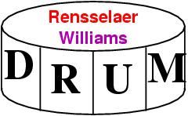
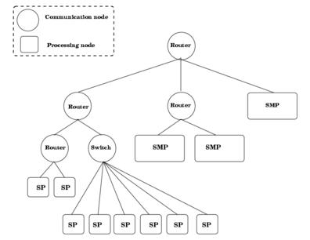
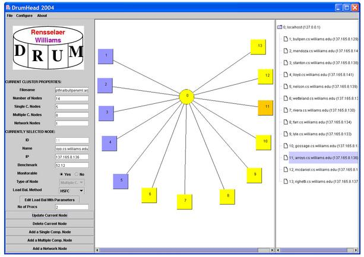

DRUM: The Dynamic Resource Utilization Model

Jamal Faik, Joe Flaherty, Luis Gervasio
Department of Computer Science
Rensselaer Polytechnic Institute
110 Eighth Street
Troy, NY 12180
|
|
Jim Teresco
Department of Computer Science
Williams College
47 Lab Campus Drive
Williamstown, MA 01267
|
Overview
The Dynamic Resource Utilization Model (DRUM) supports
resource-aware, large-scale scientific computing in heterogeneous and
hierarchical parallel computing environments. Clusters have gained
wide acceptance as a viable alternative to tightly-coupled parallel
computers. They provide cost-effective environments for running
computationally-intensive parallel and distributed applications. An
attractive feature of clusters is the ability to expand their
computational power incrementally by incorporating additional nodes.
This expansion often results in heterogeneous environments, as the
newly-added nodes often have superior capabilities. Grid technologies
have enabled computation on even more heterogeneous and
widely-distributed systems. Internet-connected systems include more
heterogeneity and extreme network hierarchy.
DRUM encapsulates hardware resources and their interconnection
topology. DRUM provides monitoring facilities for dynamic evaluation
of communication, memory, and processing capabilities. Heterogeneity
is quantified by aggregating the information from the monitors into a
scalar form, easily usable by existing load balancing algorithms.

DRUM is a standalone library, requiring only MPI and a C compiler.
DRUM will make use of other libraries (e.g., pthreads, SNMP, NWS) if
they are available. When combined with the partitioners and load
balancers in Sandia National Laboratories' Zoltan Toolkit, DRUM
provides a convenient and straightforward way to tailor partitions to
a given parallel computing environment.
DRUM requires knowledge of the execution environment. Some of this
information can be inferred at run time, but other information must be
specified manually. DRUM provides a graphical front end called
DrumHead that aids in
this initial configuration, which is required only when first using
DRUM, or when characteristics of the cluster are changed.

Availability
DRUM will be made freely available, but it is not yet ready for a
general release. If you would like to find out if a prerelease
version might be useful, please contact the developers at
drum-devel AT cs.williams.edu (replace AT with @). It
currently works for Solaris and Linux systems. FreeBSD and Mac OS X/Darwin
support is partially implemented but not yet functional.
Publications
The most thorough description of DRUM to date is contained in Jamal
Faik's Ph.D. dissertation:
-
A Model for Resource-Aware Load Balancing on Heterogeneous and
Non-dedicated Clusters
Jamal Faik.
Ph.D. Thesis. Department of Computer Science. Rensselaer
Polytechnic Institute. 2005.
This article describes the Bullpen Cluster at Williams College and how
it motivated DRUM and hierarchical partitioning and load balancing:
-
Resource-Aware Scientific Computation on a Heterogeneous Cluster
James D. Teresco, Jamal Faik, and Joseph E. Flaherty.
Previously published as Williams College Department of Computer Science Technical Report CS-04-10, 2004.
Computing in Science & Engineering, Vol. 7, Number 2, pp. 40-50, 2005.
The last section of this article describes DRUM and presents some DRUM results:
-
New challenges in dynamic load balancing
Karen D. Devine, Erik G. Boman, Robert T. Heaphy, Bruce A. Hendrickson,
James D. Teresco, Jamal Faik, Joseph E. Flaherty, Luis G. Gervasio.
Appl. Numer. Maths. Vol. 52, Issues 2-3, pp. 133-152, 2005.
This manuscript describes DRUM in the some detail:
-
A model for resource-aware load balancing on heterogeneous clusters
Jamal Faik, Joseph E. Flaherty, Luis G. Gervasio, James D. Teresco, Karen D. Devine
Williams College Department of Computer Science Technical Report CS-05-01, 2005.
Supercedes Williams College Department of Computer Science Technical Report CS-04-03.
This manuscript describes the DrumHead graphical configuration tool
and work on the DRUM interface to the Network Weather Service:
-
Resource-aware Parallel Adaptive Computation for Clusters
James D. Teresco, Laura Effinger-Dean and Arjun Sharma
Proc. Computational Science -- ICCS 2005: 5th International
Conference, Atlanta, GA, USA, Part II, Volume 3515 of Lecture
Notes in Computer Science, Vaidy S. Sunderam, Geert Dick van
Albada, Peter M. A. Sloot, et al. (Eds). pp. 107-115. Springer. 2005.
This manuscript describes resource-aware parallel computation,
including DRUM and hierarchical balancing:
-
Approaches to Architecture-Aware Parallel Scientific Computation
James D. Teresco, Joseph E. Flaherty, Scott B. Baden, Jamal Faik, Sébastien Lacour, Manish Parashar, Valerie E. Taylor, and Carlos A. Varela.
Williams College Department of Computer Science Technical Report CS-04-09, 2004.
Submitted to Proc. PP'04: Frontiers of Scientific Computing
This manuscript describes hierarchical balancing in Zoltan,
which is part of the DRUM project:
-
Hierarchical Partitioning and Dynamic Load Balancing for Scientific Computation
James D. Teresco.
Williams College Department of Computer Science Technical Report CS-04-04, and Sandia Report SAND2004-1559A, Sandia National Laboratories, 2004.
PARA'04 Workshop on State-Of-The-Art in Scientific
Computing, To appear.
Acknowledgements
Faik, Gervasio, Teresco and Flaherty were supported in part by
contract 15162 with
Sandia National Laboratories, a multiprogram laboratory operation
by Sandia Corporation, a Lockheed Martin Company, for the United
States Department of Energy under Contract DE-AC04-94AL85000.
Significant DRUM development was done by Rensselaer undergraduate Jin
Chang, who is now a graduate student at the University of Chicago.
Karen Devine and Erik Boman at Sandia National Laboratories have been
consulted extensively during the design and implementation of DRUM.
NWS support and FreeBSD support were added by Williams Summer Science
program undergraduate Laura Effinger-Dean, and the new graphical user
interface DrumHead was initially developed by Williams Summer
Science program undergraduate Arjun Sharma. Williams Summer Science
program undergraduate Bartley Tablante developed new machine model
tree construction routines that use DrumHead's XML files, added code
to allow DRUM to guide Zoltan's hierarchical balancing procedures, and
redesigned the Makefiles used to configure and build DRUM.
Jim Teresco -
Fri Aug 19 13:55:32 EDT 2005